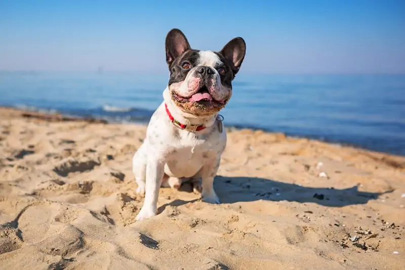
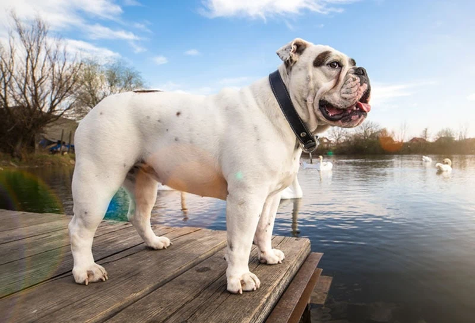

The French Bulldog has been steadily building its popularity for the past decade, rising from the 14th rank in 2012 to breaking the top five in 2017 and finally taking the number one spot in 2022. And when you consider its needs, the surge in ownership makes sense.
French Bulldogs are intelligent, playful, and relatively low-maintenance dogs. As a favorite pet to celebrities, the affectionate breed gets along with everyone. Alongside its slight frame, the Frenchie’s limited barking makes it perfect for smaller homes and apartments.
NOT MY TEXT! JUST A PLACE HOLDER. SEE: https://www.hepper.com/most-popular-dog-breeds/

The Labrador Retriever’s fall from the top of the popularity rankings wasn’t too far, as its adoring, friendly nature maintains its reputation as the quintessential family dog. Thanks to their gundog background, Labs are easy to train and laser-focused on satisfying their owners. They’re a top choice for first-time and experienced dog owners and numerous individuals needing a capable service animal.
NOT MY TEXT! JUST A PLACE HOLDER. SEE: https://www.hepper.com/most-popular-dog-breeds/

Not much separates Labrador and Golden Retrievers beyond the Golden’s longer, feathery coat. The hunted game was a bit different for the two sporting breeds, allowing for distinct physical differences. But the identical sweet temperament, trainability, and overflowing friendliness make them equally popular for families.
NOT MY TEXT! JUST A PLACE HOLDER. SEE: https://www.hepper.com/most-popular-dog-breeds/

The German Shepherd is a well-rounded working dog that is athletic, powerful, and highly intelligent. Though its name comes from its sheep-tending prowess, the breed quickly became renowned for police and military work in the early 1900s.
Today, German Shepherds are still some of the most versatile dogs for guarding, service work, military roles, and search and rescue duties. As companion animals, their exceptional trainability, loyalty, and confidence have made them a perennial favorite.
NOT MY TEXT! JUST A PLACE HOLDER. SEE: https://www.hepper.com/most-popular-dog-breeds/

To nobody’s surprise, the backbone of the Doodle designer dog craze is one of the most popular purebred dogs. The curly, hypoallergenic coat’s grooming possibilities position the Poodle as the fanciest of breeds, but there’s more to them than fashionable show looks. Poodles are among the most intelligent of all dogs. They are highly agile and strong and even have a blue-collar pedigree as former water dogs.
NOT MY TEXT! JUST A PLACE HOLDER. SEE: https://www.hepper.com/most-popular-dog-breeds/

As a stocky, squash-faced, and lovable lump of a dog, the Bulldog’s goofiness and affinity for kids have made it an irresistible family pet. Thankfully, their loyalty, trainability, and courage are all that’s left from their bull-baiting days. Although they’re more prone to health issues than many breeds, their mild energy levels and playfulness make them easy to enjoy.
NOT MY TEXT! JUST A PLACE HOLDER. SEE: https://www.hepper.com/most-popular-dog-breeds/

The Rottweiler made a positive jump in 2022, moving from the eighth most popular dog breed in 2021 to the seventh spot this past year. The intimidating yet calm guard dogs garner interest for their immense loyalty, courage, confidence, and trainability. As they filled roles as working dogs since the Roman Empire, those traits are intrinsic to the essence of every Rottweiler.
NOT MY TEXT! JUST A PLACE HOLDER. SEE: https://www.hepper.com/most-popular-dog-breeds/

Curious and happy-go-lucky Beagles are a seamless addition to a family with kids and other pets. Being prone to following their noses, these undersized scenthounds still present numerous challenges. They can be a chore due to their distractibility, energy, shrewdness, and incessant bark. But if you can iron out their habits, you’ll understand why Beagles have been a top-10 breed for over half a century.
NOT MY TEXT! JUST A PLACE HOLDER. SEE: https://www.hepper.com/most-popular-dog-breeds/

When you understand the Dachshund’s badger-hunting history, their bold personalities begin to make a lot of sense. They’re small in stature yet enormous in bravery and liveliness. These characteristics that made the dogs such incredible hunting dogs have translated into some of the most enjoyable companion animal traits.
Dachshunds are playful and adaptable. Though they can be big barkers, they’re also highly receptive and quick to learn from quality training. As one of the first hounds accepted in the AKC registry, Dachshunds have long been among the most popular small breeds.
NOT MY TEXT! JUST A PLACE HOLDER. SEE: https://www.hepper.com/most-popular-dog-breeds/

German Shorthaired Pointers are highly agreeable as gundogs and companion animals. They’re adaptable mid-sized dogs with people-pleasing, family-friendly temperaments, and an intelligent working mindset.
Hunters valued these dogs for their versatility. They could point, retrieve, and track across rough land and through the water with minimal direction. If you can satisfy their need for exercise and manage their prey drive with proper training, GSPs can focus that determination on boundless affection for the family.
NOT MY TEXT! JUST A PLACE HOLDER. SEE: https://www.hepper.com/most-popular-dog-breeds/